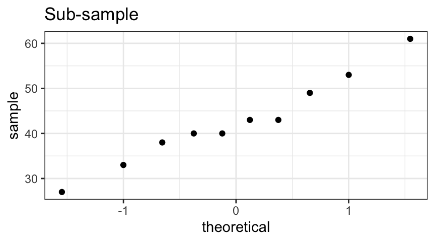
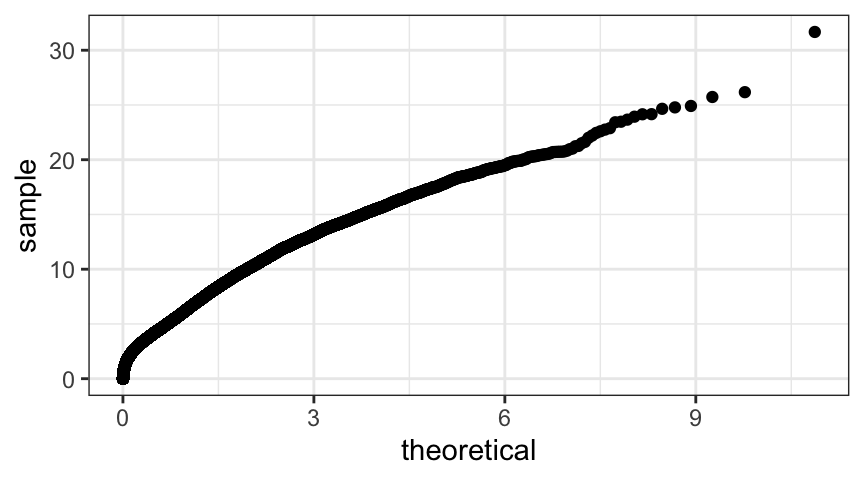

library(alr4)
gf_dhistogram( ~ Duration, data = oldfaith, binwidth = 20, center = 110) |>
gf_dens( ~ Duration, data = oldfaith)4 Random Variables
- random variable a random process that results in a number
We have already seen notation for and a few examples of random variables. In this chapter we will learn a bit more about random variables. We will focus our attention on two types of random variables: discrete random variables and continuous random variables.1
4.1 Discrete Random Variables
A discrete random variable takes on values from a discrete set of possibilities, typically either a finite set or a subset of the integers. Here are some examples.
- If we roll a die and record the number, there are six possible values, so the random variable is discrete.
- If we keep flipping a coin until we get a head and record the number of coin tosses, then the possible values of the random variable are \(1, 2, 3, \dots\) This is also a discrete random variable.
For each of the possible values of a discrete random variable, there is some probability of that value occurring. So to specify a discrete random variable, we need to specify those probabilities. When there are only a small number of possible value, we can do this with a table.
| value of \(X\) | 0 | 1 | 2 |
| probability | 0.2 | 0.5 | 0.3 |
This is really just one way of describing a function, called the probability mass function (or pmf). The pmf satisfies \[ f(x) = \Prob(X = x) \tag{4.1}\]
Sometimes instead of providing a table, we will be able to specify the pmf using a formula. For example, we could define a pmf \(g\) by
\[ g(y) = (2 - |1-y|) / 4 \mbox{ for $y \in \{0, 1, 2\}$} \] which is the same as specifying \(g\) with the following table.
| value of \(Y\) | 0 | 1 | 2 |
| probability | 0.25 | 0.5 | 0.25 |
Here’s one more example. Let \(W\) be a random variable that can take on any integer value and has pmf given by
\[ h(w) = \left(\frac{1}{2}\right)^{w+1} \mbox {for $w = 0, 1, 2, 3, \dots$} \]
So, for example, \(\Prob(W = 2) = h(2) = \left(\frac{1}{2} \right)^3 = \frac18\).
Probabilities can be obtained from the pmf by adding:
- \(\Prob( X > 0 ) = 0.5 + 0.3 = 0.8\)
- \(\Prob( Y > 0) = 0.5 + 0.25\)
- \(\Prob(W > 0) = \frac{1}{4} + \frac{1}{8} + \frac{1}{16} + \cdots = \frac{1}{2}\)
- \(\Prob(W > 0) = 1 - \Prob(W = 0) = 1 - \frac{1}{2} = \frac{1}{2}\)
The only restrictions on a pmf are that
- the values must all be non-negative, and
- the sum (over all possible values of the random variable) must be 1.
That way the probabilities will behave the way probabilities should.
Example 4.1 Q. Amy is a 92% free throw shooter. We watch her take shots until she misses and let \(X\) be the number of shots. What is the pmf for \(X\)?
A. This time our table would be infinite (since there is no limit to how many consecutive free throws Amy might make), so we won’t be able to write the whole table down. But we can work out the first few probabilities:
- \(f(1) = \Prob(X = 1) = 0.08\). (She has to miss the first shot.)
- \(f(2) = \Prob(X = 2) = (0.92)(0.08)\). (She has to make the first and miss the second.)
- \(f(3) = \Prob(X = 3) = (0.92)^2(0.08)\). (She has to make the first two, then miss the third.)
At this point, we see there is a general pattern that allows us to write down an algebraic form for the pmf:
\[ f(x) = \Prob(X = x) = (0.92)^{x-1}(0.08) \] where \(x\) is a positive integer. (If \(x\) is not an integer, or \(x < 1\), then \(f(x) = 0\), since those values are not possible.)
4.2 Continuous Random Variables
4.2.1 Density histograms, density plots, density functions
A histogram is a simple picture describing the “density” of data. Histogram bars are tall in regions where there is more data – i.e., where the data are more “dense”.
library(alr4)
gf_histogram( ~ Duration, data = oldfaith)
gf_dhistogram( ~ Duration, data = oldfaith)The density scale is the same scale that is used by gf_dens() and gf_density(), and it is the default scale for histograms created using gf_dhistogram().
The density scale is chosen so that the area of each rectangular bar (width times height) is equal to the proportion of the data set represented by the rectangle.
Example 4.2 Q. Use the histogram of Old Faithful eruption times to estimate the proportion of eruptions that last between 100 and 120 seconds.
A. In our histogram of Old Faithful eruption durations, the bar corresponding to the bin from 100–120 appears to have a height of about 0.09. That gives an area of 0.18 and indicates that approximately 18% of the eruptions last between 100 and 120 seconds.
tally( ~ ( 100 < Duration & Duration <= 120), data = oldfaith, format = "prop" )(100 < Duration & Duration <= 120)
TRUE FALSE
0.1888889 0.8111111 The key idea behind the density scale can be expressed as
Probability \(=\) area
This association of area with probability means that the total area of all the bars will always be equal to 1 if we use the density scale.
It also provides us with a way to describe a distribution with a mathematical function.
Definition 4.1 Let \(f: \reals \to \reals\) be a function such that
- \(f(x) \ge 0\) for all \(x\),
- \(\displaystyle \int_{-\infty}^{\infty} f(x) \; dx = 1\).
Then \(f\) is called a density function (or probability density function, abbreviated pdf) and describes a continuous random variable \(X\) such that
\[ \Prob(a \le X \le b) = \int_a^b f(x) \; dx \;. \tag{4.2}\]
Example 4.3 Q. Let \(f\) be defined by \[ f(x) = \begin{cases} 1 - |x| & x \in [-1,1] \\ 0 & \mbox{otherwise}\\ \end{cases} \] Show that \(f\) is a density function. Let \(X\) be the associated random variable, and compute the following probabilities:
- \(\Prob(X \le 0)\)
- \(\Prob(X \le 1)\)
- \(\Prob(X \le \frac{1}{2})\)
- \(\Prob(-\frac{1}{2} \le X \le \frac{1}{2})\)
A. While we could set up integrals for these, it is easier to solve them using geometry.2
f <- makeFun( (1 - abs(x)) * (abs(x) <= 1) ~ x )
gf_fun( f(x) ~ x, xlim = c(-1.5, 1.5) )The entire area under the curve can be found as the area of a triangle with base 2 and height 1. \[ \int_{-\infty}^{\infty} f(x) \; dx = \int_{-1}^1 f(x) \; dx = \frac 12 \cdot 2 \cdot 1 = 1 \] This implies that \(f\) is a density function.
\(\Prob(X \le 0) = 1/2\) by symmetry or using \(\frac{1}{2} \cdot 1 \cdot 1\) to compute the area of the triangle.
\(\Prob(X \le 1) = \int_{-\infty}^{1} f(x) \; dx = \int_{-1}^{1} f(x) \; dx = 1\).
\(\Prob(X \le \frac{1}{2}) = \int_{-\infty}^{1/2} f(x) \; dx = \int_{-1}^{1/2} f(x) \; dx = 1 - \frac{1}{2} \cdot \frac{1}{2} \cdot \frac{1}{2} = \frac78\).
\(\Prob( -\frac{1}{2} \le X \le \frac 12 ) = \int_{-1/2}^{1/2} f(x) \; dx = 1 - \frac{2}{8} = \frac{3}{4}\).
We can also let R do (numerical) integration for us. There are two ways to do this. The first method uses the integrate() function.
integrate( f, -Inf, 1 )1 with absolute error < 9.2e-05# this will be more accurate since we aren't asking R to approximate
# something that we already know is exactly 0
integrate( f, -1, 1)1 with absolute error < 1.1e-14integrate( f, -.5, .5 )0.75 with absolute error < 8.3e-15# if you just want the value without the text saying how accurate the approximation is
# here are two equivalent ways to get it
value(integrate( f, -.5, .5 )) # extract the value using val()[1] 0.75integrate( f, -.5, .5 ) |> value() # |> is the "then" operator[1] 0.75An alternative approach uses antiD() from the mosaicCalc package.
library(mosaicCalc)
F <- antiD( f(x) ~ x)
F(1) - F(-1) # total probability -- better be 1[1] 1F(.5) - F(-1) # P( -1 <= X <= 0.5 )[1] 0.875F(.5) - F(-.5) # P( -.5 <= X <= .5 )[1] 0.754.2.2 Kernels
The kernel of a continuous random variable is a function that is a constant multiple of the pdf. The reason that these are interesting is that any kernel can be converted into a pdf by dividing by this constant. In particular, if
\[ \int_{-\infty}^{\infty} k(x) \; dx = A \;, \] then \(k\) is the kernel of a random variable with pdf \[ f(x) = \frac{k(x)}{A} \;. \]
Example 4.4 Q. The kernel of a random variable is given by
\[ k(x) = x^2 \; \boolval{ x \in [0,2] } \; . \] Determine the pdf.
A. First we determine the value of the integral \[ \int_{-\infty}^{\infty} k(x) \; dx \;. \]
k <- makeFun( x^2 * ( 0 <= x & x <= 2) ~ x )
integrate( k, 0, 2)2.666667 with absolute error < 3e-14K <- antiD(k(x) ~ x, lower.bound = 0)
K(2)[1] 2.666667Since the total area is \(8/3\), if \(\frac{k(x)}{8/3}\) is the pdf.
4.2.3 Cumulative distribution functions
If \(X\) is a random variable, then the cumulative distribution function (cdf) for \(X\), often denoted \(F_X\), is the function defined by \[ F_X(x) = \Prob(X \le x) \] That is, the output of the cdf reports the probability of being below a particular value.
For a continuous random variable, the cdf is a particular anti-derivative of the pdf. The derivative of the cdf is the pdf.
Example 4.5 Continuing with our previous example, if we choose -1 as our lower endpoint, then the anti-derivative will be the cdf.
f <- makeFun((1 - abs(x)) * (abs(x) <= 1) ~ x)
F <- antiD( f(x) ~ x, lower.bound = -1) # We can use -1 instead of -Inf here.
F(-1) # this should be 0 since we chose -1 as the lower bound.[1] 0F(1) # P(X <= 1); should be 1[1] 1F(.5) # P(X <= 0.5)[1] 0.875F(.5) - F(-.5) # P( -0.5 <= X <= 0.5 )[1] 0.75We have already seen that we can use a pdf \(f\) to calculate probabilities via integration, and that there is a special anti-derivative of \(f\) called the cdf such that the cdf \(F\) satisfies \[ F(x) = \Prob(X \le x) \] This function can also be used to compute probabilities, since \[ \Prob(a \le X \le b) = \int_a^b f(x) \; dx = F(b) - F(a) \] Indeed, once we learn how to get the cdf function in R this will be our primary way to calculate probabilities in applications.
4.3 Mean and Variance
4.3.1 The mean of a random variable
The definition for the mean of a random variable will be motivated by the calculation of a mean of some data.
Example 4.6 Q. Suppose a student has taken \(10\) courses and received \(5\) A’s, \(4\) B’s, and \(1\) C. Using the traditional numerical scale where an A is worth \(4\), a B is worth \(3\), and a C is worth \(2\), what is this student’s GPA (grade point average)?
A. The first thing to notice is that \(\frac{4 + 3 + 2}{3} = 3\) is not correct. We cannot simply add up the values and divide by the number of values. Clearly this student should have a GPA that is higher than \(3.0\), since there were more A’s than C’s.
Consider now a correct way to do this calculation:
\[ \begin{aligned} \mbox{GPA} &= \frac{4 + 4 + 4 + 4 + 4 + 3 + 3 + 3 + 3 + 2}{10} \\[2mm] & = \frac{5\cdot 4 + 4\cdot 3 + 1 \cdot 2}{10} \\[1mm] & = \frac{5}{10} \cdot 4 + \frac{4}{10}\cdot 3 + \frac{1}{10} \cdot 2 \\ & = 4 \cdot \frac{5}{10} + 3 \cdot \frac{4}{10} + 2 \cdot \frac{1}{10} \\ & = 3.4 \;. \end{aligned} \]
The key idea here is that the mean is a sum of values times probabilities.
\[ \mbox{mean} = \sum \mbox{value} \cdot \mbox{probability} \] For a discrete random variable this translates to \[ \E(X) = \sum x f(x) \] where the sum is taken over all possible values of \(X\).
The mean of a random variable also goes by another name: expected value. We can denote the mean of \(X\) by either \(\mu_X\) or \(\E(X)\).
Example 4.7 Let \(X\) be discrete random variable with probabilities given in the table below.
| value of \(X\) | 0 | 1 | 2 |
| probability | 0.2 | 0.5 | 0.3 |
Q. What is the mean (expected value) of \(X\)?
A. \(E(X) = 0 \cdot 0.2 + 1 \cdot 0.5 + 2 \cdot 0.3 = 0.5 + 0.6 = 1.1\) This value reflects the fact that the random variable is larger than 1 a bit more often than it is less than 1.
Example 4.8 A local charity is holding a raffle. They are selling \(1000\) raffle tickets for $\(5\) each. The owners of five of the raffle tickets will win a prize. The five prizes are valued at $\(25\), $\(50\), $\(100\), $\(1000\), and $\(2000\). Let \(X\) be the value of the prize associated with a random raffle ticket (\(0\) for non-winning tickets). Then:
- \(\evProb{the ticket wins a prize} = \Prob(X > 0) = 5/1000\).
- \(\evProb{the ticket wins the grand prize} = \Prob(X = 2000) = 1/1000\).
- \(\evProb{the ticket wins a prize worth more than \$75} = \Prob(X > 75) = 3/1000\).
The expected value of a ticket is
\[ 0 \cdot\frac{995}{1000} + 25 \cdot\frac{1}{1000} + 50 \cdot\frac{1}{1000} + 100 \cdot\frac{1}{1000} + 1000 \cdot\frac{1}{1000} + 2000 \cdot\frac{1}{1000} \]
25 * .001 + 50 * 0.001 + 100 * 0.001 + 1000 * 0.001 + 2000 * 0.001[1] 3.175# R can help us set up this sum:
sum(c(25, 50, 100, 1000, 2000) * 0.001)[1] 3.175When working with a continuous random variable, we replace the sum with an integral and replace the probabilities with our density function to get the following definition:
\[ \E(X) = \mu_X = \int_{-\infty}^{\infty} x f(x) \; dx \]
If you recall doing center of mass problems you may recognize this integral as the first moment. (For pdfs, we don’t need to divide by the “mass” because the total “mass” is the area under the curve, which will always be 1 for a random variable).
Note: It is possible that the integral used to define the mean will fail to converge. In that case, we say that the random variable has no mean or that the mean fails to exist.3
Example 4.9 Q. Compute the mean of our triangle distribution from Example 4.13.
A. We simply compute the integral from the definition.
\[ \begin{aligned} \E(X) & = \int_{-1}^{1} x f(x) \; dx \\ & = \int_{-1}^{0} x (x-1) \; dx + \int_{0}^1 x ( 1-x ) \; dx \\ & = \int_{-1}^{0} x^2-x \; dx + \int_{0}^1 x-x^2 \; dx \\ & = \left. \frac{x^3}{3} - \frac{x^2}{2} \right|_{-1}^0 + \left. \frac{x^2}{2} - \frac{x^3}{3} \right|_{0}^1 \\ & = \frac13 - \frac{1}{2} + \frac{1}{2} - \frac13 = 0 \end{aligned} \]
This isn’t surprising, by symmetry we would expect this result.
We could also calculate this numerically in R:
f <- makeFun( (1 - abs(x)) * (abs(x) <= 1) ~ x)
xf <- makeFun( x * f(x) ~ x )
integrate(xf, -1, 1)0 with absolute error < 3.7e-15F <- antiD( x * f(x) ~ x, lower.bound = -1)
F(-1) # should be 0[1] 0F(1)[1] 04.3.2 Variance
Arguing similarly, we can compute the variance of a discrete or continuous random variable using
discrete: \(\Var(X) = \sigma^2_X = \sum_x (x-\mu_X)^2\)
continuous: \(\Var(X) = \sigma^2_X = \int_{-\infty}^{\infty} (x-\mu_X)^2 f(x) \; dx\)
These can be combined into a single definition by writing \[ \Var(X) = \E((X - \mu_X)^2) \;. \]
Note: It is possible that the sum or integral used to define the mean (or the variance) will fail to converge. In that case, we say that the random variable has no mean (or variance) or that the mean (or variance) fails to exist.4
Example 4.10 Q. Compute the variance of the triangle random variable from the Example 4.3.
A.
f <- makeFun( (1 - abs(x)) * (abs(x) <= 1) ~ x)
xxf <- makeFun( (x-0)^2 * f(x) ~ x )
integrate(xxf, -1, 1)0.1666667 with absolute error < 1.9e-15G <- antiD( (x-0)^2 * f(x) ~ x)
G(1) - G(-1)[1] 0.1666667Some simple algebraic manipulations of the sum or integral above shows that
\[ \begin{aligned} \Var(X) &= \E(X^2) - \E(X)^2 \end{aligned} \tag{4.3}\]
Example 4.11 Q. Compute the mean and variance of the random variable with pdf given by
\[ g(x) = \frac{3x^2}{8} \boolval{x \in[0,2]} \;. \]
This is the pdf computed in Example 4.4.
A.
g <- makeFun( (3 * x^2/8 ) * (0 <= x & x <= 2) ~ x )
m <- antiD( x * g(x) ~ x, lower.bound = 0)(2) # all in one step instead of defining F or G
m[1] 1.5v <- antiD( (x - m)^2 * g(x) ~ x, m = m, lower.bound = 0)(2)
v[1] 0.15# here's the alternate computation
antiD( x^2 * g(x) ~ x, lower.bound = 0)(2) - m^2[1] 0.15As with data, the standard deviation is the square root of the variance.
4.3.3 Quantiles
Quantiles solve equations of the form
\[ \int_{-\infty}^x f(t) \; dt = F(x) = \Prob(X \le x) = q \]
where \(q\) is known and \(x\) is unknown. So the 50th percentile (which is the 0.5-quantile or the median) is the number such that
\[ \Prob(X \le x) = 0.5 \;. \]
Example 4.12 Q. What is the 25th percentile of the triangle distribution in Example 4.3?
A. We need to solve for \(x\) in the following equation:
\[ 0.25 = \Prob(X \le x) \; . \] We can do this by working out the integral involved:
\[ \begin{aligned} 0.25 &= \int_{-1}^{x} 1 - |t| \; dt \\ &= \int_{-1}^{x} 1 + t \; dt \\ &= \left( t + t^2/2 \right) |_{-1}^{x} \\ &= x + x^2/2 + 1 - 1^2/2 \\ &= x + x^2/2 + 1/2 \\ 0 & = x^2/2 + x + 1/4 \\ 0 & = 2x^2 + 4x + 1 \end{aligned} \]
So by the quadratic formula, \(x = \frac{1}{2} \sqrt{2} - 1 = -0.2928932\).
We can check this by evaluating the cdf.
f <- makeFun( (1 - abs(x)) * (abs(x) <= 1) ~ x )
F <- antiD(f(x) ~ x, lower.bound = -1)
x <- 1/2*sqrt(2) - 1
F(x) [1] 0.25This could also be done geometrically by solving \(\frac{1}{2} y^2 = \frac14\) and letting \(x = -1 + y\).
4.4 Some Important Families of Distributions
For now, we will consider only distributions of continuous random variables (probability density functions). We will leave set aside discrete random variables (probability mass function) until quite a bit later in the course.
A family of distributions is a collection of distributions that share some common features. Typically, these are described by giving a pdf that has one or more parameters. A parameter is simply a number that describes (a feature of) a distribution that distinguishes between members of the family. In this section we describe briefly some of the important distributions and how to work with them in R
4.4.1 Triangle Distributions
The example distribution in the previous section is usually referred to as a triangle distribution (or triangular distribution) because of the shape of its pdf. There are, of course, many triangle distributions. A triangle distribution is specified with three numbers: \(a\), the minimum; \(b\), the maximum, and \(c\), the location of the peak. A triangle distribution is symmetric if the peak is halfway between the minimum and maximum (\(c = \frac{a+b}{2}\)).
When \(X\) is a random variable with a triangle distribution, we will write \(X \sim\Tri(a,b,c)\). For many of the most common distributions, R has several functions that facilitate computation with those distributions. The triangle distributions are not in the base R distribution, but they can be added by requiring the triangle package.
For each distribution, there are four functions in R that always start with a single letter followed by a name for the distribution. In the case of the triangle distributions, these functions are
| Function | What it does |
|---|---|
dtriangle(x, a, b, c) |
Computes value of the pdf at x. |
ptriangle(q, a, b, c) |
Computes value of the cdf at x, i.e., \(\Prob(X \le \texttt{q})\). |
qtriangle(p, a, b, c) |
Computes quantiles, that is a value \(q\) so that \(\Prob(X \le \texttt{q}) = \texttt{p}\). |
rtriangle(n, a, b, c) |
Randomly samples n values from the \(\Tri(\texttt{a},\texttt{b},\texttt{c})\) distribution. |
Example 4.13 Q. Let \(X \sim\Tri(0,4,1)\). Use R to answer the following questions.
- Plot the pdf for \(X\).
- What is \(\Prob(X \le 1)\)?
- What is \(\Prob(X \le 2)\)?
- What is the median of \(X\)?
- What is the mean of \(X\)?
A. The gf_dist() function in the ggformula package allows us to graph the pdf for any function R knows how to work with in the standard way. For example, here is a plot of the pdf of a \(\Tri(0, 4, 1)\)-distribution.
library(triangle) # a package that knows about triangle distributions
gf_dist("triangle", a = 0, b = 4, c = 1)Here is the R code to answer the remaining questions.
ptriangle(1, 0, 4, 1) # P(X <= 1); notice that his is NOT 1/2[1] 0.25ptriangle(2, 0, 4, 1) # P(X <= 2); also NOT 1/2[1] 0.6666667qtriangle(0.5, 0, 4, 1) # median is the 0.5-quantile[1] 1.55051T <- antiD( x * dtriangle(x, 0,4,1) ~ x, lower.bound = 0)
T(4) # mean of X[1] 1.666667integrate( makeFun( x * dtriangle(x, 0,4,1) ~ x) , 0, 4)1.666667 with absolute error < 1.9e-144.4.2 Uniform Distributions
A uniform distribution is a described by a constant function over some interval. Its shape is a rectangle. This makes it particularly easy to calculate probabilities for a uniform distribution. Despite its simplicity, the family of uniform distributions has many applications.
We will let \(X \sim \Unif(a,b)\) denote that \(X\) is a uniform random variable on the interval from \(a\) to \(b\). In R, the parameters \(a\) and \(b\) are given more meaningful names: min and max. We can use the following code to graph the \(\Unif (1,4)\) distribution.
gf_dist("unif", min = 1, max = 4, xlim = c(-1, 6)) Notice that the width of the non-zero portion of the pdf is 3, so the height must be \(1/3\).
Probabilities involving uniform distributions are easily calculated using simple geometry, but R also provides several functions for working with uniform probability distributions.
| Function | What it does |
|---|---|
dunif(x, min, max) |
Computes value of the pdf at x. |
punif(q, min, max) |
Computes value of the cdf at x, i.e., \(\Prob(X \le \texttt{q})\). |
qunif(p, min, max) |
Computes quantiles, that is a value \(q\) so that \(\Prob(X \le \texttt{q}) = \texttt{p}\). |
runif(n, min, max) |
Randomly samples n values from the \(\Unif(\texttt{min},\texttt{max})\) distribution. |
Notice the pattern to these names. They start with the same letters as the functions for the triangle distributions, but replace triangle with unif. There are similar functions for all of the distributions in this chapter.
Example 4.14 Q. Let \(X \sim \Unif(1,4)\). Use R to calculate the following values and check the values using geometry:
- \(\Prob(X \le 2)\)
- the 80th percentile of the distribution
A.
punif(2,1,4) # P(X <= 2 )[1] 0.3333333(2-1) * 1/3 # P(X <= 2 ) using area[1] 0.3333333qunif(.8, 1,4) # 80th percentile[1] 3.4We could also get the 80th percentile by solving the equation \(\frac{x-1}{3} = 0.8\). From this we get \(\frac{x}{3} = 0.8 + 1/3\), so \(x = 3 ( 0.8 + 1/3) = 2.4 + 1 = 3.4\).
4.4.3 Exponential Distributions
The exponential distributions are useful for modeling the time until some “event” occurs. The model is based on the assumptions that
The probability of an event occurring in any small interval of time is proportional to the length of the time interval. The constant of proportionality is the rate parameter, usually denoted by \(\lambda\).
The probabilities of events occurring in two small non-overlapping intervals are independent.
Example 4.15 Here are some situations that might be well modeled by an exponential distribution:
The time until the next radioactive decay event is detected on a Geiger counter
The time until a space satellite is struck by a meteor (or some other space junk) and disabled.
The model would be good if (over some time span of interest) the chances of getting struck are always the same. It would not be such a good model if the satellite moves through time periods of relatively higher and then relatively lower chances of being struck (perhaps because we pass through regions of more or less space debris at different times of the year.)
The lifetime of some manufactured device.
This is a pretty simple model (we’ll learn better ones later) and most often is too simple to describe the interesting features of the lifetime of a device. In this model, failure is due to some external thing “happening to” the device; the device itself does not wear (or improve) over time.
We will let \(X \sim \Exp(\lambda)\) denote that \(X\) has an exponential distribution with rate parameter \(\lambda\). The kernel of such a distribution is \[ k(x; \lambda) = e^{-\lambda x} \; \boolval{x \ge 0} \] Notice that the function describing this distribution is defined only for x-values that are real numbers greater than or equal to zero (in mathematical notation, the interval \([0, \infty)\).) This interval is sometimes called the ``support” of the distribution. When using probability distributions to model data, it’s important to think about whether the support of the distribution matches well with the range of possible values observed in the data.
The exponential distribution function is a pretty easy function to integrate, but R provides the now familiar functions to make things even easier.
| Function | What it does |
|---|---|
dexp(x, rate) |
Computes value of the pdf at x. |
pexp(q, rate) |
Computes value of the cdf at q, i.e., \(\Prob(X \le \texttt{q})\). |
qexp(p, rate) |
Computes quantiles, that is a value \(q\) so that \(\Prob(X \le \texttt{q}) = \texttt{p}\). |
rexp(n, rate) |
Randomly samples n values from the \(\Exp(\lambda)\) distribution where \(\lambda\) = rate. |
gf_dist("exp", rate = 4)4.4.4 Gamma and Weibull Distributions
The Gamma and Weibull families of distributions are generalizations of the exponential distribution. Each family has two parameters, a rate parameter as in the exponential distribution, and an additional parameter called the shape parameter (denoted by \(\alpha\) below). The reciprocal of the rate parameter is called the scale parameter. For the Gamma distribution, R lets us use either rate or scale (and the default is rate). For the Weibull, we must use the scale.
| distribution | kernel |
|---|---|
| \(\Gamm(\alpha, \lambda)\) | \(k(x) = x^{\alpha} e^{-\lambda x}\) for \(x \ge 0\) |
| \(\Weibull(\alpha, \lambda)\) | \(k(x) = x^{\alpha} e^{-\lambda x^{\alpha}}\) for \(x > 0\) |
Both families of distributions are supported on the interval \([0, \infty\).) For the most part, we won’t use these formulas in calculations, preferring to let R do the work for us. However, notice that each of these distributions has a pdf that allows for relatively simple integration. For the Gamma distributions, we need to use integration by parts (\(\alpha- 1\) times). For the Weibull distributions we can use a substitution: \(u = x^{\alpha}\). In each case, when \(\alpha= 1\) we get an exponential distribution.
The now familiar functions are available for each of these distributions.
| Function | What it does |
|---|---|
dgamma(x, shape, rate = 1, scale = 1/rate) |
Computes value of the pdf at x. |
pgamma(q, shape, rate = 1, scale = 1/rate) |
Computes value of the cdf at q, i.e., \(\Prob(X \le \texttt{q})\). |
qgamma(p, shape, rate = 1, scale = 1/rate) |
Computes quantiles, that is a value \(q\) so that \(\Prob(X \le \texttt{q}) = \texttt{p}\). |
rgamma(n, shape, rate, scale = 1/rate) |
Randomly samples n values from the Gamma distribution. |
| Function | What it does |
|---|---|
dweibull(x, shape, scale = 1) |
Computes value of the pdf at x. |
pweibull(q, shape, scale = 1) |
Computes value of the cdf at q, i.e., \(\Prob(X \le \texttt{q})\). |
qweibull(p, shape, scale = 1) |
Computes quantiles, that is a value \(q\) so that \(\Prob(X \le \texttt{q}) = \texttt{p}\). |
rweibull(n, shape, scale = 1) |
Randomly samples n values from the Weibull distribution. |
Like the exponential distributions, these distributions are skewed and only take on positive values.
These distributions arise in many applications, including as more general models for lifetime. As the pictures below indicate, the shape and scale parameters are aptly named.
gf_dist("gamma", params = list(shape = 2, rate = 1), title = "Gamma(2,1)")
gf_dist("gamma", params = list(shape = 5, rate = 1), title = "Gamma(5,1)")
gf_dist("gamma", params = list(shape = 2, scale = 10), title = "Gamma(2,10)")
gf_dist("gamma", params = list(shape = 5, scale = 10), title = "Gamma(5,10)")gf_dist("weibull", params = list(shape = 2, scale = 1),title = "Weibull(2,1)")
gf_dist("weibull", params = list(shape = 5, scale = 1),title = "Weibull(5,1)")
gf_dist("weibull", params = list(shape = 2, scale = 10),title = "Weibull(2,10)")
gf_dist("weibull", params = list(shape = 5, scale = 10),title = "Weibull(5,10)")4.4.5 Normal Distributions
We come now to the most famous family of distributions – the normal distributions (also called Gaussian distributions). These symmetric distributions have the famous “bell shape” and are described by two parameters, the mean \(\mu\) and the standard deviation \(\sigma\). The pdf for a \(\Norm(\mu, \sigma)\) distribution is
\[ f(x) = \frac{ 1}{\sigma\sqrt{2\pi}} e^{-\frac{1}{2}\left(\frac{x-\mu}{\sigma}\right)^2} \tag{4.4}\]
The inflection points of the normal distributions are always at \(\mu -\sigma\) and \(\mu+\sigma\).
Among the normal distributions is one special distribution – the standard normal distribution – which has mean 0 and standard deviation 1. All other normal distributions are simply linear transformations of the standard normal distribution. That is, If \(Z \sim \Norm(0,1)\) and \(Y = a + b X\) , then \(Y \sim \Norm(a, b)\). Conversely, if \(Y \sim \Norm(\mu,\sigma)\), then \(Z = \frac{Y - \mu}{\sigma} \sim \Norm(0,1)\).
As with the other distributions we have encountered, we have four functions that allow us to work with normal distributions in R
| Function | What it does |
|---|---|
dnorm(x, mean = 0, sd = 1) |
Computes value of the pdf at x. |
pnorm(q, mean = 0, sd = 1) |
Computes value of the cdf at x, i.e., \(\Prob(X \le \texttt{q})\). |
qnorm(p, mean = 0, sd = 1) |
Computes quantiles, that is a value \(q\) so that \(\Prob(X \le \texttt{q}) = \texttt{p}\). |
rnorm(n, mean = 0, sd = 1) |
Randomly samples n values from the \(\Norm(\mu, \sigma)\) distribution where \(\mu\) = mean and \(\sigma\) = sd. |
4.4.5.1 The 68-95-99.7 Rule
Also known as the “Empirical Rule”, the 68-95-99.7 Rule provides a set of probability benchmarks for the normal distributions because for any normal distribution:
- \(\approx 68\)% of the normal distribution is between \(\mu - \sigma\) and \(\mu + \sigma\).
- \(\approx 95\)% of the normal distribution is between \(\mu - 2\sigma\) and \(\mu + 2\sigma\).
- \(\approx 99.7\)% of the normal distribution is between \(\mu - 3\sigma\) and \(\mu + 3\sigma\).
Example 4.16 Q. Before they were rescaled, SAT scores used to be approximately normally distributed with a mean of 500 and a standard deviation of 100.
- Approximately what percent of test takers scored between 400 and 600?
- Approximately what percent of test takers scored above 600?
- Approximately what percent of test takers scored below 300?
- Approximately what percent of test takers scored between 400 and 700?
A.
- 68%
- Since 68% are between 400 and 600, the other 32% must be outside that range, half above and half below. So 16% are above 600.
- Since 95% are between 300 and 700, the other 5% must be outside that range, half above and half below. So 2.5% are below 300.
- 16% are below 400 and 2.5% are above 700, so the remaining 81.5% must be between 400 and 700.
Of course, we can get more accurate results using R:
pnorm( 600, 500, 100) - pnorm(400, 500, 100)[1] 0.6826895pnorm( 700, 500, 100) - pnorm(300, 500, 100)[1] 0.9544997pnorm( 300, 500, 100) [1] 0.02275013pnorm( 700, 500, 100) - pnorm(400, 500, 100)[1] 0.8185946The xpnorm() function will additionally draw pictures of the normal distribution with a portion of the distribution shaded in.
xpnorm(700,500,100) - xpnorm(400, 500, 100)If X ~ N(500, 100), then P(X <= 700) = P(Z <= 2) = 0.9772 P(X > 700) = P(Z > 2) = 0.02275If X ~ N(500, 100), then P(X <= 400) = P(Z <= -1) = 0.1587 P(X > 400) = P(Z > -1) = 0.8413[1] 0.8185946Example 4.17 We can use qnorm() to compute percentiles. For example, let’s calculate the 75th percentile for SAT distributions.
qnorm(.75, 500, 100)[1] 567.4494.4.6 Beta Distributions
The Beta distributions have support on the interval \((0,1)\), so they can provide a model for proportions or other quantities that are bounded between 0 and 1.5 The Beta distributions have two parameters, imaginatively called shape1 and shape2. The kernel of the Beta distributions is a product of a power of \(x\) and a power of \((1-x)\): \[
k(x; \alpha, \beta) = x^{\alpha-1} (1-x)^{\beta -1} \; \boolval{ x \in [0,1] }
\] When \(\alpha = \beta\), the distribution is symmetric, and when \(\alpha = \beta =1\), we have the \(\Unif(0,1)\)-distribution.
The two shape parameters provide a wide variety of shapes.
gf_dist("beta", params = list(shape1 = 2, shape2 = 2), title = "Beta(2,2)")
gf_dist("beta", params = list(shape1 = 2, shape2 = 0.9), title = "Beta(2,0.9)")
gf_dist("beta", params = list(shape1 = 4, shape2 = 2), title = "Beta(4,2)")
gf_dist("beta", params = list(shape1 = 0.9, shape2 = 0.85), title = "Beta(0.9,0.85)")| Function | What it does |
|---|---|
dbeta(x, shape1, shape2) |
Computes value of the pdf at x. |
pbeta(q, shape1, shape2) |
Computes value of the cdf at x, i.e., \(\Prob(X \le \texttt{q})\). |
qbeta(p, shape1, shape2) |
Computes quantiles, that is a value \(q\) so that \(\Prob(X \le \texttt{q}) = \texttt{p}\). |
rbeta(n, shape1, shape2) |
Randomly samples n values from the \(\Beta(\alpha, \beta)\) distribution where \(\alpha\) = shape1 and \(\beta\) = shape2. |
4.4.7 Binomial Distributions
A binomial distribution is a discrete distribution with two parameters (\(n\) and \(p\), or as R calls them size and prob describing a situation in which
- Our random process consists of \(n\) identical sub-processes (called trials).
- Each trial has one of two outcomes (traditionally called success and failure).
- The probability of success is \(p\) for each trial.
- The outcome of each trial is independent of the others.
The binomial random variable counts the number of successes.
Example 4.18
- If we flip a coin 100 times and let \(X\) be the number of heads, then \(X \sim \Binom( 100, 0.5)\).
- Amy is a 92% free throw shooter. If she attempts 50 free throws and we let –> \(Y\) be the number that she makes, then \(Y \sim \Binom(50, 0.92)\) (assuming that each shot is independent of the others.6)
Here are some example binomial distributions. The distributions are symmetric when \(p = 0.5\). For a fixed size \(n\), the distributions become more and more skewed as \(p\) gets closer to 0 or 1. For a fixed probability \(p\), the distributions become more and more symmetric as \(n\) gets larger.
gf_dist("binom", size = 10, prob = 0.5, title = "Binom(10, 0.5)")
gf_dist("binom", size = 10, prob = 0.05, title = "Binom(10, 0.05)")
gf_dist("binom", size = 100, prob = 0.5, title = "Binom(100, 0.5)")
gf_dist("binom", size = 100, prob = 0.05, title = "Binom(100, 0.05)")Some example binomial distributions.
The pmf for a binomial distribution is given by \[ f(x) = \binom{n}{x} p^x (1-p)^{n-x} \] where \(\binom{n}{x} = \frac{n!}{x!(n-x)!}\) is the binomial coefficient. As with the continuous distributions, we have our usual functions available.
| Function | What it does |
|---|---|
dbinom(x, size, prob) |
Computes value of the pmf at x. |
pbinom(q, size, prob) |
Computes value of the cdf at q, i.e., \(\Prob(X \le \texttt{q})\). |
qbinom(p, size, prob) |
Computes quantiles, that is a value \(q\) so that \(\Prob(X \le \texttt{q}) = \texttt{p}\). |
rbinom(n, size, prob) |
Randomly samples n values from the \(\Binom(n, \pi)\) distribution where \(n\) = size and \(\pi\) = prob. |
4.4.8 Poisson Distributions
The Poisson distributions are generally used as models for counting “events” that happen in a specified amount of time or space. If the probability of an event happening at any moment is the same and independent of events happening at other moments, then the count of events in a fixed amount of time will be a Poisson random variable. The Poisson family has one parameter – often denoted \(\lambda\) and called the rate parameter – which is the average number of events that happen over the fixed amount of time or space we are observing.
Example 4.19
Let \(X\) be the number of clicks of a Geiger counter in a 1 second interval. Since each click corresponds to a radioactive decay event which we generally assume occur “at random” but according to some average rate, a Poisson random variable would be a good model for this. The rate parameter would be the average number of decay events per second.
If you stand on along a busy highway and count the number of red cars that go by in 30 minutes, a Poisson random variable might be a good model. Sometimes you will get bunches of red cars or periods of time with few or no red cars, that is just as a Poisson model predicts.
The Poisson distributions are skewed right, but become less and less skewed as the rate parameter increases. Here are a few example plots.
gf_dist("pois", lambda = 1, title = "Pois(1)")
gf_dist("pois", lambda = 5, title = "Pois(5)")
gf_dist("pois", lambda = 15, title = "Pois(15)")
gf_dist("pois", lambda = 50, title = "Pois(50)")Some example Poisson distributions.
The pmf for a \(\Pois(\lambda)\) random variable is \[ f(x) = \frac{ e^{-\lambda} \lambda^x}{x!} \] and the functions in R for working with Poisson distributions are the following:
| Function | What it does |
|---|---|
dpois(x, lambda) |
Computes value of the pmf at x. |
ppois(q, lambda) |
Computes value of the cdf at q, i.e., \(\Prob(X \le \texttt{q})\). |
qpois(p, lambda) |
Computes quantiles, that is a value \(q\) so that \(\Prob(X \le \texttt{q}) = \texttt{p}\). |
rpois(n, lambda) |
Randomly samples n values from the \(\Pois(\lambda)\) distribution where \(\lambda\) = lambda. |
4.5 Fitting Distributions to Data
Suppose we think a family of distributions would make a good model for some situation. How do we decide which member of the family to use? The simple answer is that we should choose the one that fits “best.” The trick is deciding what it means to fit well. In fact there is more than one way to measure how well a distribution fits a data set.
Example 4.20 We can use the following code to load a data set that contains three year’s worth of mean hourly wind speeds (mph) in Twin Falls, ID. This kind of data is often used to estimate how much power could be generated from a windmill placed in a given location.
Wind <-
read.csv("https://rpruim.github.io/Engineering-Statistics/data/stob/TwinfallsWind.csv")
head(Wind, 2)tail(Wind, 2)gf_histogram( ~ speed, data = Wind, binwidth = 1 )As we can see, the distribution is skewed, but it doesn’t look like an exponential distribution would be a good fit. Of the distributions we have seen, it seems like a Weibull or Gamma distribution would be a potentially good choice. A Weibull model has often been used as a model for mean hourly wind speed, and the shape of our histogram indicates that this is a reasonable family of distributions.
Q. Which Weibull distribution is the best model for our data?
A. The fitdistr() in the MASS package uses the method of maximum likelihood to fit univariate (one variable) distributions.
fitdistr( Wind$speed, "weibull" )Error in fitdistr(Wind$speed, "weibull"): Weibull values must be > 0For fitdistr() to fit a Weibull distribution, all of the data must be positive, but our data includes some 0’s.
tally( ~ (speed == 0), data = Wind)(speed == 0)
TRUE FALSE
48 26225 Let’s see how small the smallest non-zero measurements are.
min( ~ speed, data = Wind |> filter(speed > 0))[1] 0.01This may well be a simple rounding issue, since the wind speeds are recorded to the nearest 0.01 and 0.01 is the smallest positive value. Let’s create a new variable that moves each value of 0 to 0.0025 and try again. Why 0.0025? If we think that 0.01 represents anything in the range 0.005 to 0.015, which would round to 0.01, then 0 represents anything in the range 0 to 0.005.
0.0025 is the middle of that range.
Wind <- Wind |> mutate(speed2 = ifelse( speed > 0, speed, 0.0025))
fitdistr( Wind$speed2, "weibull" ) shape scale
1.694422851 6.650586935
(0.007957624) (0.025551827)This says that the best fitting (in the sense of maximum likelihood) Weibull distribution is the \(\Weibull(1.69, 6.65)\)-distribution.
The gf_histogram() function has an option to overlay the distribution fit by fitdistr() so we can see how good the fit is graphically.
gf_dhistogram( ~ speed2, data = Wind) |>
gf_fitdistr( ~ speed2, data = Wind, dist = "weibull")
This can be abbreviated a bit:
gf_dhistogram( ~ speed2, data = Wind) |>
gf_fitdistr(dist = "weibull")gf_fitdistr() is inheriting the formula and data from gf_dhistogram().
Example 4.21 As an alternative, we could fit a Gamma distribution to the wind speed data.
fitdistr(Wind$speed2, "gamma") shape rate
2.495582854 0.421178362
(0.020485581) (0.003828652)gf_dhistogram( ~ speed2, data = Wind) |>
gf_fitdistr(dist = "gamma" , color = ~ "Gamma") |>
gf_fitdistr(dist = "weibull" , color = ~ "Weibull")By eye, it appears that the Gamma distribution fits this data set slightly better, but there may be other reasons to prefer the Weibull distribution. In fact, there has been a good deal of research done regarding which distributions to use for wind speed data fitting. The answer to the question of which distributions should be used seems to be that it depends on the purpose for your modeling:
``The fact that different distributions excel under different applications motivates further research on model selection based upon the engineering parameter of interest.” Morgan et al. (2011)
Example 4.22 1986–87 was a good season for Michael Jordan, a famous former NBA basketball player. Possible models for the points scored each game that season are normal, Weibull, and Gamma distributions. The normal distributions might be a good choice if we think that the distributions is roughly symmetric (very good games are about the same amount above average as the very poor games are below average). Weibull and Gamma distributions have the built in feature that scores cannot be negative and would allow for a skewed distribution. The fitdistr() function in the MASS package can fit each of these.
library(fastR2) # the Jordan8687 data set is in this package
fitdistr(Jordan8687$points, "normal") mean sd
37.0853659 9.8639541
( 1.0892915) ( 0.7702454)fitdistr(Jordan8687$points, "weibull") shape scale
4.1227692 40.7746012
( 0.3454908) ( 1.1516943)fitdistr(Jordan8687$points, "gamma") shape rate
12.42843002 0.33513033
( 1.91535288) ( 0.05270279)We can use a histogram with overlaid density curve to see how well these fits compare to the data.
gf_dhistogram(~ points, data = Jordan8687, binwidth = 5) |>
gf_fitdistr(dist = "norm", color = ~"normal") |>
gf_fitdistr(dist = "weibull", color = ~ "Weibull") |>
gf_fitdistr(dist = "gamma", color = ~ "Gamma")The three fits are similar, but not identical.
4.5.1 Maximum Likelihood
The fitdistr() function uses the maximum likelihood method to estimate distribution parameters. The maximum likelihood method is one of the most commonly used estimation methods in all of statistics because (1) it can be used in a wide range of applications, and (2) the resulting estimators have some some desirable properties. Maximum likelihood estimation tries to choose the parameter values that maximize the likelihood of the observed data.
First, let’s think about the “likelihood” of an individual observed data-point. The likelihood of the data-point is just the probability density function (or probability mass function) for the distribution of interest, evaluated at the value observed in the data. The likelihood gives some indication of how frequently we’d expect to observe this value, but it is not a probability (for one thing, likelihoods can exceed 1). The figure below illustrates that the likelihood of observing a person 80 inches (6 feet, 8 inches) tall, if the person comes from a population whose heights are Normally distributed with a mean of 68 inches and a standard deviation of 6 inches is about 0.009:
Given a set of specific parameter values, the likelihood of an entire observed data-set can be calculated by obtaining the value of the likelihood of each observed data-point, and summing these over all the observed data points. Then, we can find the maximum likelihood parameter estimates by trying many candidate parameter values until satisfied that we have found the ones that maximize the likelihood. (The numerical methods used are usually a bit more sophisticated than ``guessing lots of random candidate values”, but we won’t get into the details here. In some cases, it is also possible to write down a mathematical expression for the likelihood of the data given the parameters, and maximize it analytically.)
We’ll illustrate the main ideas of maximum likelihood with a simple example.
Example 4.23 Michael has three dice in his pocket. One is a standard die with six sides, another has four sides, and the third has ten sides. He challenges you to a game. Without showing you which die he is using, Michael is going to roll a die 10 times and report to you how many times the resulting number is a \(1\) or a \(2\). Your challenge is to guess which die he is using.
Q. Michael reports that \(3\) of the \(10\) rolls resulted in a \(1\) or a \(2\). Which die do you think he was using?
A. The probability of obtaining a \(1\) or a \(2\) is one of \(\frac{1}{2}\), \(\frac13\), or \(\frac15\), depending on which die is being used. Our data are possible with any of the three dice, but let’s see how likely they are in each case.
- If \(\evProb{roll 1 or 2} = \frac15\), then the probability of obtaining exactly Micheal’s data is \[ \left(\frac15\right)^3 \left(\frac45\right)^7 = 0.0016777 \;. \]
(Whatever the order, there will be 3 events with probability \(1/5\) and 7 with probability \(4/5\). Since the events are independent, we can multiply all of these probabilities.)
If \(\evProb{roll 1 or 2} = \frac13\), then the probability of obtaining exactly Micheal’s data is \[ \left(\frac13\right)^3 \left(\frac23\right)^7 = 0.0021677 \;. \]
If \(\evProb{roll 1 or 2} = \frac{1}{2}\), then the probability of obtaining exactly Micheal’s data is \[ \left(\frac{1}{2}\right)^3 \left(\frac{1}{2}\right)^7 = 0.0016777 \;. \]
Of these, the largest likelihood is for the case that \(\evProb{roll 1 or 2} = \frac13\), i.e., for the standard, six-sided die. Our data would be more likely to occur with that die than with either of the other two – it is the maximum likelihood die.
In general, maximum likelihood calculations are harder because instead of having only 3 choices, there will be infinitely many choices, and instead of having only one parameter, there may be multiple parameters. So techniques from (multi-variable) calculus or numerical approximation methods are often used to maximize the likelihood function. The fitdistr() function uses pre-derived formulas for some distributions and numerical approximation methods for others. In some cases, you will get warning messages about attempts to apply a function to values that don’t make sense (trying to take logs or square roots of negative numbers, zero in the denominator, etc.) as the numerical approximation algorithm explores options in an attempt to find the best fit. The help documentation for fitdistr() explains which distributions it can handle and what method is used for each.
4.5.2 The method of moments
An easy (but sometimes fairly crude) way to estimate the parameters of a distribution is the method of moments. You will often see this method used in engineering textbooks, especially if they do not rely on software that implements other methods (like the maximum likelihood method).
The basic idea is to set up a system of equations where we set the mean of the data equal to the mean of the distribution, the variance of the data equal to the variance of the distribution, etc.7
To employ this method, we need to know the means and variances of our favorite families of distributions (in terms of the parameters of the distributions). For all of the distributions we have seen, one can work out formulas for the means and variances in terms of the parameters involved. These are listed in Table 4.5
Example 4.24 Let’s return to the wind speeds in Example 4.20. The formulas for the mean and variance of a Weibull distribution involve the gamma function \(\Gamma()\), which might be unfamiliar to you. So let’s simplify things.
Theoretical properties and observations of wind speeds at other locations suggest that using a shape parameter of \(\alpha = 2\) is often a good choice (but shape does differ from location to location depending on how consistent or variable the wind speeds are). The Weibull distributions with \(\alpha = 2\) have a special name, they are called the Rayleigh distributions.
So \(\Rayleigh(\beta) = \Weibull(\alpha = 2, \beta)\). In this case, from Table 4.5, we see that to calculate the mean we need the value of \(\Gamma(1 + \frac{1}{2}) = \Gamma(1.5) = \sqrt{\pi}/2\).
gamma(1.5)[1] 0.8862269sqrt(pi)/2[1] 0.8862269From Table 4.5 we see that the mean of a \(\Rayleigh(\beta)\)-distribution is \[ \E(X) = \beta \frac{\sqrt{\pi}}{2} \]
Now we can choose our estimate \(\hat \beta\) for \(\beta\) so that \[ \hat \beta \frac{\sqrt{\pi}}{2} = \overline x ;. \] That is, \[ \hat\beta = \frac{2 \overline x }{\sqrt{\pi}} \]
x.bar <- mean(~speed, data = Wind)
x.bar[1] 5.925238beta.hat <- x.bar * 2 / sqrt(pi)
beta.hat [1] 6.685915So our method of moments fit for the data is a \(\Rayleigh(6.69) = \Weibull(2, 6.69)\)
Although the Rayleigh distributions are not as flexible as the Weibull or Gamma distributions, and although maximum likelihood is generally preferred over the method of moments, the method of moments fit of a Rayleigh distribution does have one advantage: it can be computed even if all you know is the mean of some sample data. Sometimes, that is all you can easily get your hands on (because the people who collected the raw data only report numerical summaries). You can find average wind speeds for many locations online, for example here: http://www.wrcc.dri.edu/htmlfiles/westwind.final.html
Example 4.25 For distributions with two parameters, we solve a system of two equations with two unknowns. For the normal distributions this is particularly easy since the parameters are the mean and standard deviation, so we get
\[ \begin{aligned} \hat\mu &= \mean x\\ \hat\sigma^2 &= s_x^2\\ \end{aligned} \]
x.bar <- mean(~speed, data = Wind); x.bar[1] 5.925238v <- var(~speed, data = Wind); v[1] 13.34635sqrt(v)[1] 3.653265So the method of moments suggests a \(\Norm(5.93, 3.65)\) distribution. In this case, the method of moments and maximum likelihood methods give the same results.
fitdistr(Wind$speed, "normal") mean sd
5.92523770 3.65319577
(0.02253814) (0.01593687)But this doesn’t mean that the fit is particularly good. Indeed, a normal distribution is not a good choice for this data. We know that wind speeds can’t be negative and we have other distributions (exponential, Weibull, and Gamma, for example) that are also never negative. So choosing one of those seems like a better idea. The following plot shows, as we expected, that the normal distribution is not a particularly good fit.
gf_histogram(~speed, data = Wind, fit = "normal")It is important to remember that the best fit using a poor choice for the family of distributions might not be a useful fit.
The choice of distributions is made based on a combination of theoretical considerations, experience from previous data sets, and the quality of the fit for the data set at hand.
Standard names for parameters that appear in several distributions in Table 4.5 include (\(\lambda\)), (\(\alpha\)), and (\(\beta\)). In the normal distributions, \(\mu\) and \(\sigma\) are called mean and in R, and in the uniform distributions, \(a\) and \(b\) are called and . The function \(\Gamma(x)\) that appears in the formulas for the Weibull and Beta distributions is a kind of continuous extrapolation from the factorial function. The function will calculate these values in R.”
| distribution | notation | pdf or pmf | mean | variance |
|---|---|---|---|---|
| Uniform | \(\Unif(a, b)\) | \(\displaystyle \frac{1}{b-a}\) for \(x in [a, b]\) | \(\displaystyle \frac{b+a}{2}\) | \(\displaystyle \frac{(b-a)^2}{12}\) |
| Standard normal | \(\Norm(0,1)\) | \(\displaystyle \frac{1}{\sqrt{2\pi}} {e^{-\frac{1}{2} z^2}}\) | 0 | 1 |
| Normal | \(\Norm(\mu,\sigma)\) | \(\displaystyle \frac{1}{\sigma\sqrt{2\pi}} \cdot e^{-\frac{1}{2} (\frac{x-\mu} {\sigma})^2}\) | \(\mu\) | \(\sigma\) |
| Exponential | \(\Exp(\lambda)\) | \(\lambda e^{-\lambda x}\) for \(x > 0\) | \(1/\lambda\) | \(1/\lambda^2\) |
| Gamma | \(\Gamm(\alpha, \lambda = \frac{1}{\beta})\) | \(\displaystyle \frac{\lambda^\alpha}{\Gamma(\alpha)} x^{\alpha-1} e^{-\lambda x}\) for \(x > 0\) | \(\alpha/\lambda = \alpha \beta\) | \(\alpha/\lambda^2 = \alpha \beta^2\) |
| Weibull | \(\Weibull(\alpha,\beta = \frac{1}{\lambda})\) | \(\displaystyle \frac{\alpha}{\beta^\alpha} x^{\alpha-1} e^{-(x/\beta)^\alpha}\) for \(x > 0\) | \(\beta \Gamma(1 + \frac1{\alpha})\) | \(\beta^2 \left[ \Gamma(1 + \frac{2}{\alpha}) - \left[ \Gamma(1 + \frac{1}{\alpha}) \right]^2 \right]\) |
| Beta | \(\Beta(\alpha, \beta)\) | \(\frac{\Gamma(\alpha+\beta)}{\Gamma(\alpha)\Gamma(\beta)} x^{\alpha-1}(1-x)^{\beta-1}\) for \(x \in (0,1)\) | \(\displaystyle \frac{\alpha}{\alpha + \beta}\) | \(\displaystyle \frac{\alpha \beta }{(\alpha + \beta)^2(\alpha + \beta + 1)}\) |
| Binomial | \(\Binom(n, p)\) | \(\displaystyle \binom{n}{x} p^x (1-p)^{n-x}\) for integer \(x\) with \(0 \le x \le n\) | \(np\) | \(np(1-p)\) |
| Poisson | \(\Pois(\lambda)\) | \(\displaystyle \frac{e^{-\lambda} \lambda^x} {x!}\) | \(\lambda\) | \(\lambda\) |
: Some (families of) continuous distributions. {#tbl-distributions}
4.6 Quantile-Quantile Plots
To this point we have looked at how well a distribution fits the data by overlaying a density curve on a histogram. While this is instructive, it is not the easiest way to make a graphical comparison between a data set and a theoretical distribution. Our eyes are much better at judging whether something is linear than they are at judging whether shapes have a particular kind of curve. Furthermore, certain optical misperceptions tend to cause people to exaggerate some kinds of differences and underestimate others.
Quantile-quantile plots offer an alternative approach. As the name suggests, the idea is to compare the quantiles of our data to the quantiles of a theoretical distribution. These are then plotted as a scatter plot. Let’s go through those steps with a small data set so we can see all the moving parts, then we’ll learn how to automate the whole process using gf_qq().
4.6.1 Normal-Quantile Plots
The normal distributions are especially important for statistics, so normal-quantile plots will be our most important example of quantile-quantiles plots. Also, special properties of the normal distributions make normal-quantile plots especially easy and useful. We will illustrate the construction of these plots using a data set containing Michael Jordan’s game by game scoring output from the 1986–87 basketball season.
Example 4.26 Let’s begin by forming a randomly selected sample of 10 basketball games.
set.seed(123) # so you can get the same sample if you like.
SmallJordan <- sample(Jordan8687, 10)
SmallJordanprobs <- seq(0.05, 0.95, by = 0.10)
probs [1] 0.05 0.15 0.25 0.35 0.45 0.55 0.65 0.75 0.85 0.95observed <- sort(SmallJordan$points) # sorted observations
theoretical <- qnorm( probs, mean = mean(observed), sd = sd(observed) ) # theoretical quantiles
QQData <- data.frame(observed = observed, theoretical = theoretical)
QQDataIf the observed data matched the theoretical quantiles perfectly, a scatter plot would place all the points on the line with slope 1 passing through the origin.
gf_point( observed ~ theoretical, data = QQData, title = "Hand made QQ-plot" ) |>
gf_fun( x ~ x, alpha = 0.6, color = "blue", linetype = "dashed")Even better, we don’t need to know the mean and standard deviation in advance, because all normal distributions are linear transformations of the \(\Norm(0,1)\)-distribution. So our standard practice will be to compare our data to the \(\Norm(0,1)\)-distribution. If \(X \sim \Norm(\mu,\sigma)\), then \(X = \mu + \sigma Z\) where \(Z \sim \Norm(0,1)\), so a plot of \(X\) vs. \(Z\) will have slope \(\sigma\) and intercept \(\mu\).
theoretical2 <- qnorm( probs, mean = 0, sd = 1 ) # theoretical quantiles from Norm(0,1)
QQData2 <- data.frame(observed = observed, theoretical = theoretical2)
gf_point(observed ~ theoretical, data = QQData2, title = "Hand made QQ-plot", xlab = "theoretical (z)" ) |>
gf_abline(intercept = ~ mean(SmallJordan$points), slope = ~ sd(SmallJordan$points),
alpha = 0.5, color = "navy", data = NA) |>
gf_hline(yintercept = ~ mean(SmallJordan$points), alpha = 0.5) |>
gf_vline(xintercept = ~ 0, alpha = 0.5)This whole process is automated by the gf_qq() function.
gf_qq( ~ points, data = SmallJordan, title = "Sub-sample" )
gf_qq( ~ points, data = Jordan8687, title = "Full data set" )4.6.2 Other distributions
Working with other distributions is similar, but most families of distributions don’t have a single “master example” to which we can make all comparisons, so we need to pick a particular member of the family (either by fitting or for some theoretical reason).8
Example 4.27
Let's build a quantile-quantile plot for our wind speed data comparing
to normal, gamma and Weibull distributions.We can automate this, but we need to tell gf_qq() how to calculate the quantiles.
gf_qq( ~ speed2, data = Wind) # normal-quantile plot; normal is not a good modelThe normal model does not fit well, but both Gamma and Weibull are reasonable models:
fitdistr(Wind$speed2, "gamma") shape rate
2.495582854 0.421178362
(0.020485581) (0.003828652)fitdistr(Wind$speed2, "Weibull") shape scale
1.694422851 6.650586935
(0.007957624) (0.025551827)fittedqgamma <- makeFun( qgamma(p, shape = 2.496, rate = 0.421 ) ~ p )
fittedqweibull <- makeFun( qweibull(p, shape = 1.694, scale = 6.651) ~ p )
gf_qq( ~speed2, data = Wind, distribution = fittedqgamma )gf_qq( ~speed2, data = Wind, distribution = fittedqweibull )4.7 Exercises
Exercise 4.1 Let \(f(x) = 5/4 - x^3\) on \([0,1]\).
- Show that \(f\) is a pdf.
- Calculate \(\Prob(X \le\frac{1}{2})\).
- Calculate \(\Prob(X \ge\frac{1}{2})\).
- Calculate \(\Prob(X = \frac{1}{2})\).
Solution.
f <- makeFun( (5/4 - x^3) * ( abs(x-.5) <= .5 ) ~ x )
plotFun(f(x) ~ x, x.lim = c(-1,2)) # quick plot to make sure things look correct.F <- antiD(f(x) ~x)
# part a: f(x) >=0, so we just need to check that the total area is 1
F(1) - F(0) == 1 [1] TRUEF(1/2) - F(0) # part b[1] 0.609375F(1) - F(1/2) # part c[1] 0.390625F(1/2) - F(1/2) # part d[1] 0Exercise 4.2 Repeat parts (2) – (4) of Example 4.13 using geometry rather than R
Solution.
- \(\Prob(X \le 1) = \frac 12 \cdot 1 \cdot \frac{1}{2} = \frac 14\)
- \(\Prob(X \le 2) = 1 - \Prob(X \ge 2) = 1 - \frac{1}{2} \cdot 2 \cdot \frac13 = 1 - \frac 13 = \frac23\).
- The median \(m\) is a number between 1 and 2 and satisfies \(\frac 12 = \Prob(X \ge m) = \frac{1}{2} (4-m) \frac{4-m}{6}\).
Solving for \(m\) we get \(m = 4 - \sqrt{6} = 1.5505103\).
Exercise 4.3 Let \[ \displaystyle k(x) = (1 - x^2) \cdot\boolval{ x \in[-1,1] } = \begin{cases} 1-x^2 & x \in[-1,1] \\ 0 & \mbox{otherwise} \end{cases} \]
be the kernel of a continuous distribution.
Determine the pdf for this distribution.Compute the mean and variance for this distribution
Solution.
The integrals are easy enough to do by hand, but here is the R code
to compute them.k <- makeFun( 1 - x^2 ~ x )
K <- antiD( k(x) ~ x )
area <- K(1) - K(-1); area [1] 1.333333f <- makeFun( (1 - x^2)/area ~ x)
F <- antiD(f(x) ~ x)
F(1) - F(-1) # this should be 1 if we have done things right[1] 1G <- antiD( x * f(x) ~ x )
H <- antiD( x^2 * f(x) ~ x )
m <- G(1) - G(-1); m # E(X)[1] 0H(1) - H(-1) # E(X^2)[1] 0.2H(1) - H(-1) - m^2 # Var(X)[1] 0.2Exercise 4.4 Let \(Y \sim\Tri(0,10,4)\). Compute \(\E(Y)\) and the median of \(Y\).
Solution.
# mean:
m <- antiD( x * dtriangle(x,0,10,4) ~ x, lower.bound = 0)(10)
m[1] 4.666665# variance:
antiD( x^2 * dtriangle(x,0,10,4) ~ x, lower.bound = 0)(10) - m^2[1] 4.222229# median
qtriangle( 0.5, 0, 10, 4 )[1] 4.522774Exercise 4.5 Let \(W \sim \Unif(0,10)\). Compute \(\E(W)\) and \(\Var(W)\).
Solution.
# mean:
m <- antiD( x * dunif(x,0,10) ~ x, lower.bound = 0)(10)
m[1] 5# variance:
antiD( x^2 * dunif(x,0,10) ~ x, lower.bound = 0)(10) - m^2[1] 8.333333Exercise 4.6
- Let \(X \sim \Exp(4)\). Use R to compute \(\E(X)\).
- Let \(X \sim \Exp(10)\). Use R to compute \(\E(X)\).
- Let \(X \sim \Exp(1/5)\). Use R to compute \(\E(X)\).
- What pattern do you notice. Explain in terms of the definition of the exponential distribution why this makes sense.
Solution.
antiD( x * dexp(x, 4) ~ x, lower.bound = 0)(Inf)[1] 0.25antiD( x * dexp(x, 10) ~ x, lower.bound = 0)(Inf)[1] 0.1antiD( x * dexp(x, 1/5) ~ x, lower.bound = 0)(Inf)[1] 5It appears that the mean of an \(\Exp(\lambda)\)-distribution is \(1/\lambda\). This makes sense. If events have at a rate of \(30\) per hour, we would expect to wait \(1/30\) of an hour (on average) for the first event to happen.
Exercise 4.7 Use R to plot the pdf and compute the mean and variance of each of the following distributions.
- \(\Beta(2,3)\)
- \(\Beta(20,30)\)
- \(\Gamm(\texttt{shape} = 2, \texttt{scale} = 3)\)
- \(\Weibull(\texttt{shape} = 2, \texttt{scale} = 3)\)
Solution.
# Beta(2,3)
m <- antiD( x * dbeta(x,2,3) ~ x, lower.bound = 0)(1)
m[1] 0.4antiD( x^2 * dbeta(x,2,3) ~ x, lower.bound = 0 )(1) - m^2[1] 0.04# Beta(20,30)
m <- antiD( x * dbeta(x,20,30) ~ x, lower.bound = 0)(1)
m[1] 0.4antiD( x^2 * dbeta(x,20,30) ~ x, lower.bound = 0 )(1) - m^2[1] 0.004705882# Gamma(2,scale = 3)
m <- antiD( x * dgamma(x,2,scale = 3) ~ x, lower.bound = 0)(Inf)
m[1] 6antiD( x^2 * dgamma(x,2,scale = 3) ~ x, lower.bound = 0 )(Inf) - m^2[1] 18# Weibull(2,scale = 3)
m <- antiD( x * dweibull(x,2,scale = 3) ~ x, lower.bound = 0)(Inf)
m[1] 2.658681antiD( x^2 * dweibull(x,2,scale = 3) ~ x, lower.bound = 0 )(Inf) - m^2[1] 1.931417Exercise 4.8 For each of the following distributions, determine the proportion of the distribution that lies between 0.5 and 1.
- \(\Exp(\texttt{rate} = 2)\)
- \(\Beta(\texttt{shape1} = 3, \texttt{shape2} = 2)\)
- \(\Norm(\texttt{mean} = 1, \texttt{sd} = 2)\)
- \(\Weibull(\texttt{shape} = 2, \texttt{scale} = 1/2)\)
- \(\Gamm(\texttt{shape} = 2, \texttt{scale} = 1/2)\)
Solution.
pexp(1, 2) - pexp(0.5, 2)[1] 0.2325442pbeta(1, 3, 2) - pbeta(0.5, 3, 2)[1] 0.6875pnorm(1, 1, 2) - pnorm(0.5, 1, 2)[1] 0.09870633pweibull(1, 2, scale = 1/2) - pweibull(0.5, 2, scale = 1/2)[1] 0.3495638pgamma(1, 2, scale = 1/2) - pgamma(0.5, 2, scale = 1/2)[1] 0.329753Exercise 4.9
- Using Table 4.5 and the method of moments, fit an exponential distribution to the Twin Falls wind speed data.
Wind <-
read.csv("https://rpruim.github.io/Engineering-Statistics/data/stob/TwinfallsWind.csv")What is the estimated value of the rate parameter?
Now use
fitdistr()to fit an exponential distribution using maximum likelihood.How do the two estimates for the rate parameter compare?
How well does an exponential distribution fit this data?
Solution.
- The method of moments fit for \(\lambda\) comes from solving \(\frac{1}{\lambda} = \mean x\) for \(\lambda\), so \(\hat \lambda = \frac{1}{\mean x}\)
lambda.hat <- 1/ mean(~speed, data = Wind)
lambda.hat[1] 0.1687696fitdistr(Wind$speed, "exponential") rate
0.168769601
(0.001041213)They are the same in this case.
This fit is not that great.
gf_dhistogram(~speed, data = Wind, fit = "exponential")gf_qq( ~ speed, data = Wind, distribution = qexp)
Exercise 4.10
A Gamma distribution can also be fit using the method of moments.
Because there are two parameters (shape and rate or shape and scale),
you will need to solve a system of two equations with two unknowns.- Using Table 4.5 and the method of moments, fit a Gamma distribution to the Twin Falls wind speed data. What are the estimated values of the shape and rate parameters?
- How do the method of moments estimates for the parameters compare to the maximum likelihood estimates from
fitdistr()?
Solution.
Wind <- Wind |> mutate(speed2 = ifelse( speed > 0, speed, 0.0025))
m <- mean(~speed2, data = Wind); m[1] 5.925242v <- var(~speed2, data = Wind); v[1] 13.34629fitdistr(Wind$speed2, "gamma") shape rate
2.495582854 0.421178362
(0.020485581) (0.003828652)Now we solve
\[ \begin{aligned} \alpha \beta & = \mean x = 5.9252423 \\ \alpha \beta^2 & = s^2 = 13.3462932 \end{aligned} \]
Dividing the second by the first gives \(\hat \beta = \sfrac{s^2}{\mean x}\). From this we obtain \(\hat \alpha = \mean{x} / \hat \beta = \sfrac{ \mean x^2}{s^2}\).
beta.hat <- v/m; beta.hat[1] 2.252447alpha.hat <- m / beta.hat ; alpha.hat[1] 2.63058lambda.hat <- 1/ beta.hat ; lambda.hat[1] 0.4439616The fitted values are similar to but not identical to the maximum likelihood estimates.
Exercise 4.11 Sam has found some information about wind speed at a location he is interested in online. Unfortunately, the web site only provides the mean and standard deviation of wind speed.
| mean: | 10.2 mph |
| standard deviation: | 5.1 mph |
- Use this information and the method of moments to estimate the shape and rate parameters of a Gamma distribution.
- In principal, we could do the same for a Weibull distribution, but the formulas aren’t as easy to work with. Fit a Rayleigh distribution instead (i.e., a Weibull distribution with shape parameter equal to 2).
Solution. We can recycle some work from the previous problem to quickly obtain the method of moments fit for the Gamma distribution:
m <- 10.2
v <- 5.1^2
beta.hat <- v/m; beta.hat[1] 2.55alpha.hat <- m / beta.hat ; alpha.hat[1] 4lambda.hat <- 1/ beta.hat ; lambda.hat[1] 0.3921569For the Rayleigh distribution we solve \(\hat \beta \frac{\sqrt{\pi}}{2} = \mean x\) for \(\hat \beta\) and get \[ \hat\beta = \frac{2 \mean x }{\sqrt{\pi}} = \frac{2 \cdot 10.2 }{\sqrt{\pi}} = 11.5094675 \]
Exercise 4.12 In 1964, a study was undertaken to see if IQ at 3 years of age is associated with amount of crying at newborn age. In the study, 38 newborns were made to cry after being tapped on the foot, and the number of distinct cry vocalizations within 20 seconds was counted. The subjects were followed up at 3 years of age and their IQs were measured. You can load this data using
Baby <- read.csv("https://rpruim.github.io/Engineering-Statistics/data/BabyCryIQ.csv")
head(Baby)The `cry.count` variable records the number of distinct cry vocalizations
within 20 seconds. Choose a family of distributions to fit to this data
and do the fit using `fitdistr()`. Also include a plot showing
a histogram and your fitted density curve.Solution.
The distribution is skewed and non-negative, so a gamma or Weibull seems like
a good thing to try. fitdistr(Baby$cry.count, "gamma") shape rate
12.6338200 0.7329544
( 2.8608824) ( 0.1693120)fitdistr(Baby$cry.count, "Weibull") shape scale
3.5842275 19.1020465
( 0.4245079) ( 0.9177923)gf_dhistogram( ~ cry.count, data = Baby, binwidth = 1) |>
gf_fitdistr( ~ cry.count, data = Baby, "gamma", title = "Gamma")
gf_dhistogram(~cry.count, data = Baby, title = "Weibull") |>
gf_fitdistr(~ cry.count, data = Baby, "weibull")Exercise 4.13 Create normal quantile plots for the ages of patients in the HELPrct data set separated by substance. (Getting separate or overlaid plots using gf_qq() works just like it does for other ggformula plots).
Comment on the plots.
Solution.
gf_qq( ~ age | substance, data = HELPrct)The qq-plot for the alcohol group looks good. The other two (especially cocaine) show signs of skew – indicated by the curve to the qq plot.
gf_dens( ~ age | substance, data = HELPrct)Exercise 4.14 Match the normal-quantile plots to the histograms.
- Solution.
- Y b) V c) Z d) W e) X f) U
Exercise 4.15 Show that \(\Var(X) = \E(X^2) - \E(X)^2\) by showing that \[ \int_{-\infty}^{\infty} (x - \mu_X) ^2 f(x) \; dx = \int_{-\infty}^{\infty} x^2 f(x) \; dx - \mu_X^2 \] whenever \(f\) is a pdf and all the integrals involved converge.
Solution. Some algebra and properties of integrals are all we need:
\[ \begin{aligned} \int_{-\infty}^{\infty} (x - \mu_X) ^2 f(x) \; dx &= \int_{-\infty}^{\infty} (x^2 - 2\mu_X x + \mu_X^2) f(x) \; dx \\ &= \int_{-\infty}^{\infty} x^2 f(x) \; dx - 2 \mu_X \int_{-\infty}^{\infty} x f(x) \; dx + \mu_X^2 \int_{-\infty}^{\infty} f(x) \; dx \\ &= \Var(X) - 2 \mu_X^2 + \mu_X^2 \\ &= \Var(X) - \E(X)^2 \end{aligned} \]
Exercise 4.16 The heights of 18–22 year olds in the US follow approximately normal distributions within each sex. Estimated means and standard deviations appear in the table below.
| mean | standard deviation. | |
|---|---|---|
| women | 64.3 in | 2.6 in |
| men | 70.0 in | 2.8 in |
Answer the following questions without using a computer or calculator (except for basic arithmetic).
- If a woman is 68 inches tall, what is her z-score?
- If a man is 74 inches tall, what is his z-score?
- What is more unusual, a woman who is at least 68 inches tall or a man who is at least 74 inches tall?
- Big Joe has decided to open a club for tall people. To join his club, you must be in the tallest 2.5% of people of your sex. How tall must a woman be to join Big Joe’s club?
- How tall must a man be to join Big Joe’s club?
Solution.
(68 - 64.3)/2.6[1] 1.423077(74 - 70) / 2.8[1] 1.428571It’s pretty close, but the z-score for the man is slightly larger, so it is slightly more unusual for a man to be that tall.
64.3 + 2 * 2.6[1] 69.570 + 2 * 2.8[1] 75.6Exercise 4.17 Use the information from Exercise 4.16 to answer the following questions.
- What proportion of women are 5’10” or taller?
- What proportion of men are 6’4” or taller?
- If a man is in the 75th percentile for height, how tall is he?
- If a woman is in the 30th percentile for height, how tall is she?
Solution.
1 - pnorm(70, mean = 64.3, sd = 2.6)[1] 0.014178651 - pnorm(76, mean = 70, sd = 2.8)[1] 0.01606229qnorm(.75, mean = 70, sd = 2.8)[1] 71.88857qnorm(.30, mean = 64.3, sd = 2.6)[1] 62.93656There are important examples of random variables that are neither discrete nor continuous.↩︎
R cleverly turns TRUE and FALSE into 1 and 0 when you use them in arithmetic expressions. The definition of
f()makes use of this conversion to simplify specifying the cases.↩︎Actually, we will require that \(\int_{\infty}^{\infty} |x| f(x) \; dx\) converges.
If this integral fails to converge, we will also say that the distribution has no mean.↩︎Actually, we will require that \(\int_{\infty}^{\infty} |x| f(x) \; dx\) converges and
\(\int_{\infty}^{\infty} |x|^2 f(x) \; dx\) converges.
If these integrals (or the corresponding sums for discrete random variables) fail to converge, we will say that the distribution has no mean (or variance).↩︎A more general version of the Beta distributions can do the same thing for quantities bounded by any two numbers. This more general family of distributions has four parameters.↩︎
Whether an individual shooter’s shots are independent or exhibit longer runs of “hot” and “cold” streaks that we would expect under independence has been investigated by many people. The general conclusion seems to be that the independence assumption matches reality pretty closely.↩︎
If our distribution has more than 2 parameters, we will need higher moments, which we will not cover here.↩︎
There are a few other families of distributions that have a prototypical member such that all other members are a linear transformation of the prototype. The exponential family is one such family.↩︎